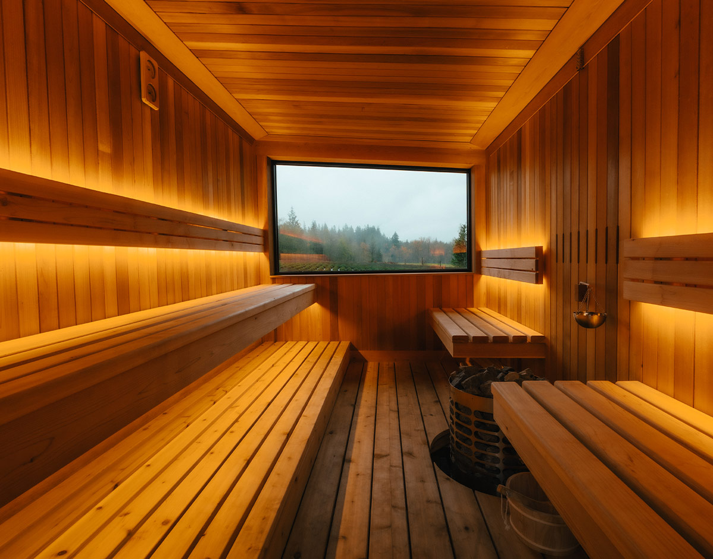

In-Person Gathering · Chilliwack, BC
The Living Room
A half-day reset for people building something real: breathwork, sauna, and cold plunge, paired with a structured practice in honest, useful connection.
Reserve Your SpotThe Vision
A half-day reset, built for people building something real
The Living Room is a half-day gathering for founders, coaches, creators, and business owners. Expect physical nervous-system work (breathwork, sauna, cold plunge) combined with a facilitated talk and a structured practice in real connection.
You're used to performing, for clients, for your team, for an audience. This is a space to set that down for an afternoon and connect with other builders doing work like yours, in a setting built for that kind of openness.
What to Expect
Physical and facilitated, woven together
Breathwork opens things up. Then Know the Room, a short facilitated round, gets everyone oriented: what you do, what you're building, what you could use help with. From there, sauna and cold plunge become free-flow connection time, real conversation with no agenda, but with actual context behind it. The day closes with a talk on identity and self-perception, followed by a closing circle.
You'll be in an intimate group, capped at 12 people, so the experience stays personal rather than performative.
Why It Matters
Regulated and known, in the same afternoon
There isn't much structured space for people building something to be physically regulated and genuinely known by peers in the same afternoon. Most networking events are transactional. Most wellness spaces are solitary.
The Living Room gives you both: a real physical reset, plus real conversation and connection with people who understand the specific pressures of building something.
The Experience
Schedule
| Time | Block |
|---|---|
| 1:00–1:20 PM | Arrival, welcome, walk the lavender field |
| 1:20–1:50 PM | Guided breathwork |
| 1:50–2:15 PM | Know the Room: facilitated pods — what you do, what you need |
| 2:15–3:00 PM | Sauna + cold plunge, free-flow connection time |
| 3:00–3:15 PM | Reset: snacks, kombucha, yerba mate, Gatorade |
| 3:15–3:50 PM | Talk: "Identity vs. The Self," on transcending fear of judgment |
| 3:50–4:00 PM | Break |
| 4:00–4:10 PM | Future-Proof Creator Summit 2027: early-bird invitation |
| 4:10–5:00 PM | Closing circle, group photo in the lavender field |
About 4 hours, 1:00–5:00 PM. Capped at 12 (10 participants plus 2 hosts).
The Venue
Soiul Wellness
Soiul Wellness is a lavender farm and wellness space nestled between the mountains in Chilliwack, BC, about a 90 minute drive from Vancouver. The property includes a lavender field, a cedar sauna, a cold plunge, and a covered patio with a fire table.

Jesse James Carver
Founder of The Living Internet Alliance.
Matthew Manning
Communication and connection coach, facilitating Know the Room and the day's connection practice. [Bio placeholder, final copy to come.]
Practical Info
- Date
- August 15, 2026
- Time
- 1:00 PM – 5:00 PM
- Location
- Soiul Wellness, Ryder Lake, Chilliwack, BC · Get directions
- Cover
- $87 CAD
- Capacity
- 12 spots
- What's included
- Breathwork, sauna, cold plunge, Know the Room, the identity talk, snacks and drinks
- What to bring
- Swimwear, a notebook, and your undivided attention
- Parking
- On site. A map will be provided to registered attendees.